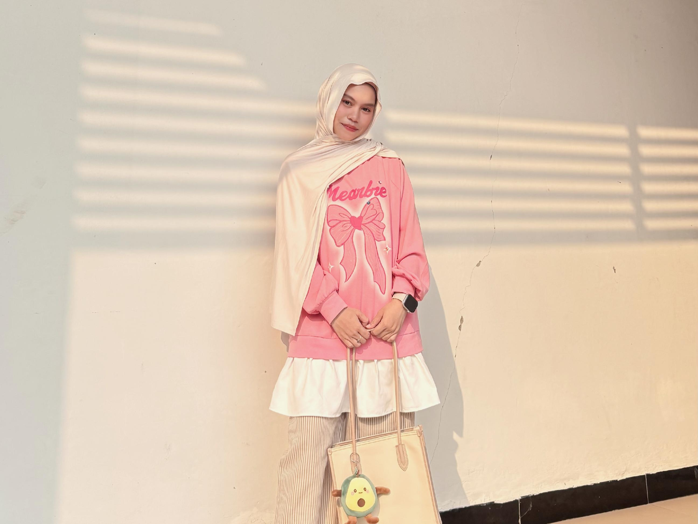
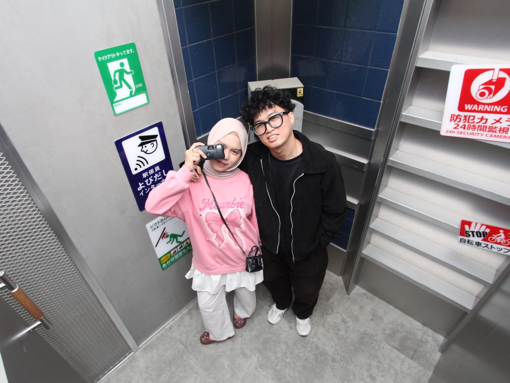
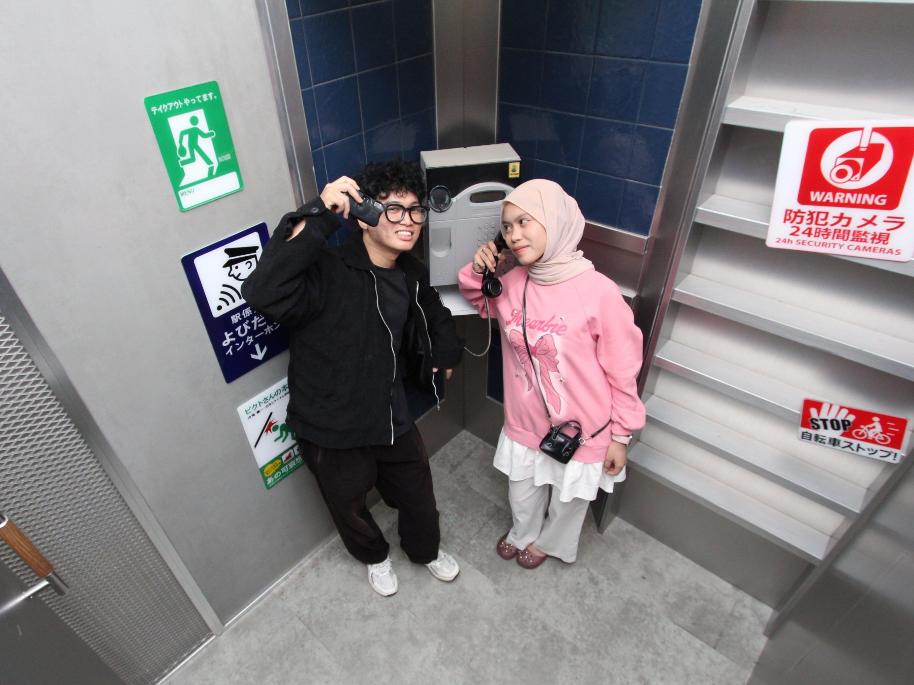
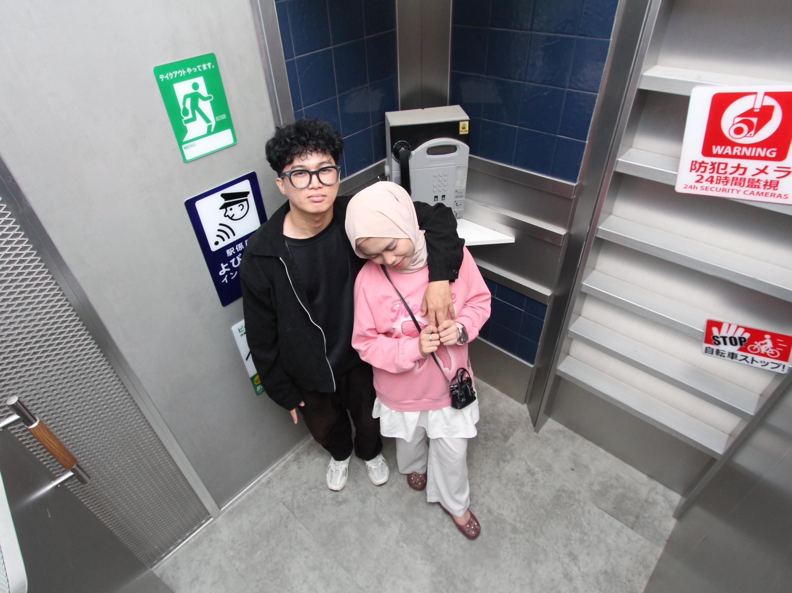

30 September 2026
Happy Birthday,
wiffy.
Untuk perempuan yang paling hubby sayangin satu-satunya dan selama-lamanya di seluruh dunia.
Hari ini bukan cuma tentang bertambahnya umur wiffy, tapi tentang betapa bersyukurnya hubby karena Allah pernah mempertemukan hubby dengan wiffy, dari kecil sampai akhirnya hati hubby balik lagi ke tempat yang paling benar.
love journey
Perjalanan kita
-
SD dulu
Teman kecil yang belum ngerti cinta
Dulu kita cuma anak kecil yang main bareng, belum ngerti cinta, belum ngerti takdir, belum ngerti kalau suatu hari nama wiffy bakal jadi nama yang paling sering hubby pikirkan.
-
Masjid Al-Jihad
Silat ala-ala yang lucu banget kalau diingat
Hubby masih inget waktu kita main silat ala-ala bareng teman-teman. Hubby sok jadi yang bisa ngajarin, padahal ya begitu-begitu aja wkk. Tapi kenangan kecil itu ternyata manis banget kalau diingat sekarang.
-
Perjalanan
Hati hubby pelan-pelan balik
Kita pernah pacaran tahun 2022, lalu kita ditakdirkan untuk tidak bersama. Hidup bikin kita jalan masing-masing. Hubby pergi, tumbuh, salah, belajar, jatuh, dan berubah. Tapi entah kenapa, waktu hubby kehilangan arah dan hubby liat wiffy, hati hubby kepikiran wiffy lagi.
-
17 Maret 2026
Satu chat yang membuka jalan lagi
Hubby chat wiffy lagi dan cuma tanya, "Khusnul apa kabar?" Dari satu chat sederhana pas bulan puasa sambil nunggu sahur itu, jalan yang lama tertutup pelan-pelan kebuka lagi.
-
Hari hubby sadar
Bukan sempurna, tapi akhirnya mengerti
Hubby datang kembali bukan sebagai orang yang sempurna, tapi sebagai orang yang akhirnya sadar siapa yang benar-benar berarti.
-
Kuala Pembuang
Bukti kecil kalau hubby serius
Hari hubby datang ke rumah orang tua wiffy di Kuala Pembuang itu bukan cuma perjalanan naik motor. Buat hubby, itu cara hubby nunjukin kalau hubby serius. Jalan dari PKY ke Kuala Pembuang bareng wiffy itu seru, lucu, capek, tapi bahagia. Hubby pengen suatu hari nanti kita ingat itu sebagai salah satu awal dari perjalanan panjang kita menuju halal.
surprise unlock
Ketuk pelan-pelan, sayang
Setiap kartu nyimpen satu hal kecil dari hati hubby.
kenangan kita
Album kecil kita

Foto kenangan menyusul di sini
Foto kenangan menyusul di sini
Foto kenangan menyusul di sini
Foto kenangan menyusul di siniIni foto-foto kita kemaren yang paling bagus-bagus dan lucu-lucu semua. Nanti kita buat lebih banyak ya, wiffy. Biar tahun depan fotonya makin banyak, ceritanya makin panjang, dan kenangannya bisa kita simpan sampai cucu-cucu kita nanti.
masa depan
Yang hubby doakan pelan-pelan
Januari 2027
Menuju halal
Semoga Allah berikan rezeki yang berlimpah, penuh keajaiban, dan jalan yang mudah untuk hubby dan wiffy melangkah serius.
Rumah hangat
Kaya raya dan berkah
Semoga kita bukan cuma cukup, tapi Allah mampukan kita membangun hidup yang lapang, bahagia, dan penuh kebaikan.
Kelak nanti
Elliana dan Gabriel
Semoga suatu hari rumah kita ramai dengan tawa Elliana Bryona Minnallah dan Gabriel Rey Minnallah, anak-anak yang Allah titipkan dalam cinta yang baik.